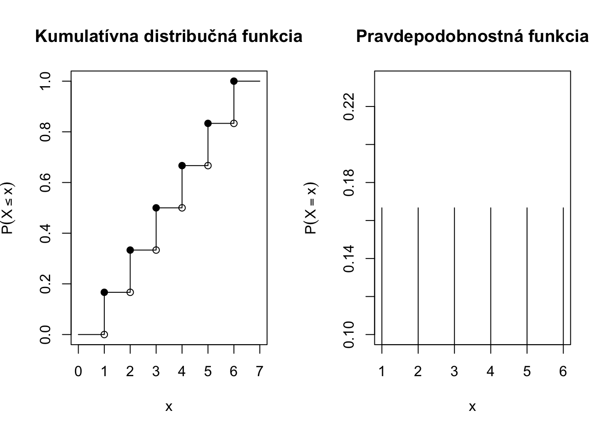
5 Diskrétna náhodná premenná
Zatiaľ sme si hovorili, že čo je to náhodná premenná. Je to spôsob ako usporiadať/očíslovať náhodnosť tak, aby sa nám s ňou potom vhodne pracovalo. Existujú rôzne druhy/skupiny náhodných premenných:
- diskrétne náhodné premenné,
- spojité náhodné premenné,
- zmiešané náhodné premenné.
Toto rozdelenie je na základe toho, aké hodnoty môžu tieto náhodné premenné nadobúdať. Delenie dáva zmysel aj preto, že s týmito skupinami náhodných premenných sa pracuje o dosť inak. Prvým dvom skupinám sa budeme venovať osobitne. V rámci tejto kapitoly budeme skúmať diskrétne náhodné premenné s nasledovnými pravdepodobnostnými rozdeleniami:
- rovnomerné rozdelenie,
- Bernoulliho rozdelenie,
- binomické rozdelenie,
- Poissonovo rozdelenie,
- geometrické rozdelenie,
- hypergeometrické rozdelenie,
- negatívne binomické rozdelenie.
Budú to také náhodné premenné, ktorých obor hodnôt je konečná alebo nanajvýš spočitateľná mnoźina. Každé takéto rozdelenie je vhodné na modelovanie akýchsi špecifických situácií.
5.1 Pravdepodobnostná funkcia diskrétnej náhodnej premennej
Vieme, že kumulatívna distribučná funkcia plne charakterizuje pravdepodobnostné správanie náhodnej premennej. Je to funkcia a vieme ju zobraziť. V prípade diskrétnej náhodnej premennej však vieme popísať pravdepodobnostné správanie náhodnej premennej aj alternatívne. Jednoducho tak, že vyčíslime pravdepodobnosti \(P(X=x)\) pre všetky možné \(x \in \mathcal{S}_X,\) kde \(\mathcal{S}_X = \{X(\omega): \omega \in \Omega\}.\) Množina \(\mathcal{S}_X\) je teda obor hodnôt funkcie \(X,\) zahŕňa všetky možné hodnoty, aké môže funkcia \(X\) nadobúdať. Pre diskrétnu náhodnú premennú je \(\mathcal{S}_X\) konečná alebo nanajvýš spočitateľná množina.
Funkciu \(p_X: \mathcal{S}_X \rightarrow [0,1]\) definovanú nasledovne
\[p_X(x) = P(X=x)\] nazývame pravdepodobnostná funkcia diskrétnej náhodnej premennej \(X\).
Platí
- \(0 \leq p_X(x) \leq 1,\)
- \(\sum_{x \in \mathcal{S}_X} p_X(x) = 1.\)
Funkcia \(p_X(x)\) tiež kvantifikuje “výšku schodu” v bodoch nespojitosti kumlatívnej distribučnej funkcie diskrétnej náhodnej premennej.
Príklad 5.1 Hádžeme férovou kockou. Označme \(\Omega = \{1,2,3,4,5,6\},\) kde napr. \(4\) značí, že na kocke padlo číslo \(4\). Nech \(\mathcal{F} = 2^{\Omega}\) a nech \(P(A) = \frac{|A|}{6}.\) Označme písmenom \(X\) náhodnú premennú, ktorá bude označovať číslo, ktoré padne na kocke. Náhodná premenná \(X\) priradí každému elementu \(k \in \Omega\) reálne číslo nasledovne: \(X(k) = k.\)
Príklad 5.2 Hádžeme dvoma férovými kockami. Označme \(\Omega = \{(1,1),(1,2),(1,3),(1,4),(1,5),(1,6),(2,1),(2,2),(2,3),\cdots, (6,5),(6,6)\},\) kde napr. \((3,2)\) značí, že na prvej kocke padlo číslo \(3\) a na druhej kocke padlo číslo \(2\). Nech \(\mathcal{F} = 2^{\Omega}\) a nech \(P(A) = \frac{|A|}{36}.\) Označme písmenom \(X\) náhodnú premennú, ktorá bude označovať súčet dvoch čísiel, ktoré padnú na kockách. Náhodná premenná \(X\) priradí každému elementu \((k_1,k_2)\) z \(\Omega\) reálne číslo nasledovne: \(X((k_1,k_2)) = k_1 + k_2.\)
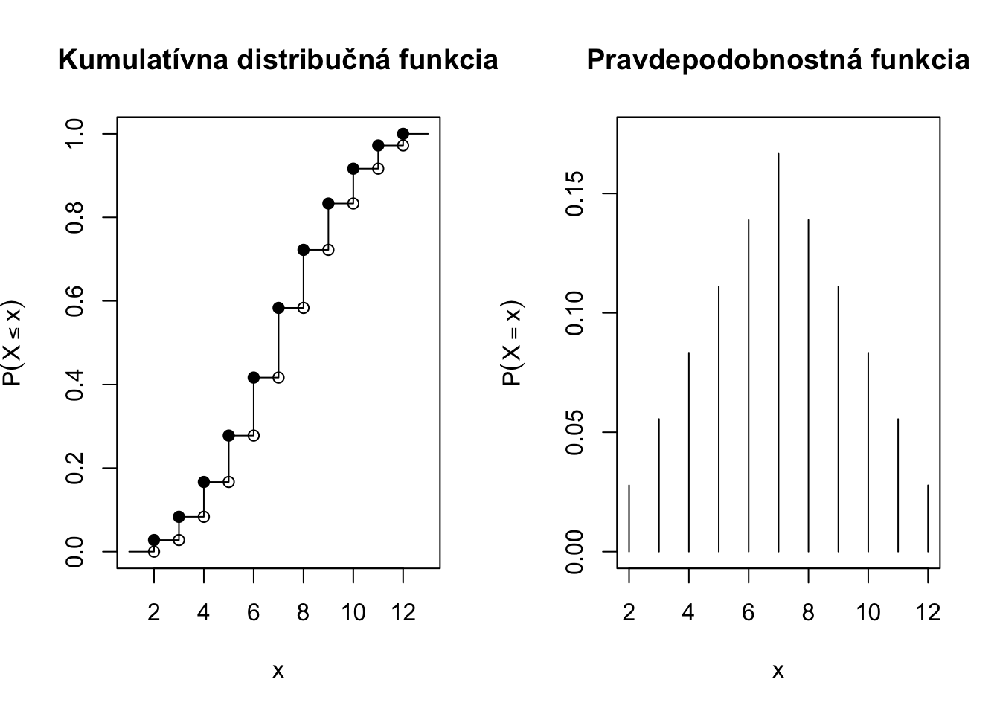
5.2 Charakteristiky diskrétnych náhodných premenných
Niekedy je užitočné reprezentovať nejaký aspekt tohoto správania jedným číslom. Okolo akej hodnoty je toto rozdelenie centrované (stredná hodnota) a ako veľmi je koncentrované/roztýlené (variancia/rozptyl).
5.2.1 Stredná hodnota
Stredná hodnota diskrétnej náhodnej premennej je zadefinovaná ako
\[\text{E}[X] = \sum_{x \in \mathcal{S}_X} x \cdot p_X(x),\] pokiaľ platí \(\sum_{x \in \mathcal{S}_X} |x| \cdot p_X(x) < \infty.\)1
Ak pretransformujeme náhodnú premennú \(Y = f(X),\) kde \(f: \mathbb{R} \rightarrow \mathbb{R},\) tak jej stredná hodnota je
\[\text{E}[Y] = E\left[ f(X) \right] = \sum_{x \in \mathcal{S}_X} f(x) \cdot p_X(x).\]
Príklad 5.3 Hádžeme férovou kockou. Nech \(X\) označuje číslo, ktoré padlo na kocke.
\[\text{E}[X] = \sum_{x \in \mathcal{S}_X} x \cdot p_X(x) = \sum_{x \in \{1,2,3,4,5,6\}} x \cdot p_X(x)= \sum_{x =1}^{6}x \cdot \frac{1}{6} = 3.5. \]
Príklad 5.4 Hádžeme dvomi férovými kockami. Nech \(X\) označuje súčet čísel na dvoch kockách.
\[\begin{eqnarray*} \text{E}[X] &=& \sum_{x \in \mathcal{S}_X} x \cdot p_X(x) = \sum_{x \in \{2,3,\cdots,12\}} x \cdot p_X(x)\\ &=& 2 \cdot \frac{1}{36} + 3 \cdot \frac{2}{36}+ 4 \cdot \frac{3}{36}+ 5 \cdot \frac{4}{36}+ 6 \cdot \frac{5}{36}+ 7 \cdot \frac{6}{36}\\ && + 8 \cdot \frac{5}{36}+ 9 \cdot \frac{4}{36}+ 10 \cdot \frac{3}{36}+ 11 \cdot \frac{2}{36}+ 12 \cdot \frac{1}{36} = 7. \end{eqnarray*}\]Stredná hodnota charakterizuje náhodnú premennú jedným číslom. Je to vážený priemer, kde hodnoty sú váhované prislúchajúcimi pravdepodobnosťami. Fyzikálnou interpretáciou je ťažisko.
Príklad 5.5 Hádžeme neférovou mincou. \(\Omega = \{H,Z\}, \mathcal{F} = 2^{\Omega}\) a \(P(\{H\}) = 0.8 = 1-P(\{Z\}).\) Nech \(X(H) = 1\) a \(X(Z) = 0.\)
\[\text{E}[X] = 1 \cdot 0.8 + 0 \cdot 0.2 = 0.8.\]
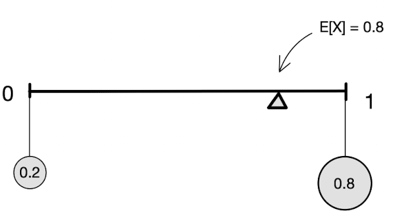
Pre strednú hodnotu platí, že je lineárna. Uvažujme dve náhodné premenné \(X\) a \(Y\) a tretiu náhodnú premennú \(Z\), pre ktorú platí \(Z = aX +bY.\) Náhodná premenná \(Z\) nadobúda hodnoty v \(\mathcal{S}_Z = \{ax+by: x \in \mathcal{S}_X, y \in \mathcal{S}_Y \}.\)
\[\begin{eqnarray*} E[Z] &=& \sum_{z \in \mathcal{S}_Z} z \cdot p_Z(z) = \sum_{x \in \mathcal{S}_X,y \in \mathcal{S}_Y} (ax+by) \cdot P(aX=ax \cap bY = by)\\ &=& \sum_{x \in \mathcal{S}_X,y \in \mathcal{S}_Y} ax \cdot P(X=x \cap Y = y) + \sum_{x \in \mathcal{S}_X,y \in \mathcal{S}_Y}by \cdot P(X=x \cap Y = y)\\ &=& \sum_{x \in \mathcal{S}_X} ax \cdot P(X=x) + \sum_{y \in \mathcal{S}_Y} by \cdot P(Y=y) \\ &=& a\sum_{x \in \mathcal{S}_X} x \cdot p_X(x) + b\sum_{y \in \mathcal{S}_Y} y \cdot p_Y(y) \\ &=& a E(X) + b E(Y). \end{eqnarray*}\]Využili sme, že platí \[\sum_{x \in \mathcal{S}_X,y \in \mathcal{S}_Y} P(X=x \cap Y = y) = \sum_{x \in \mathcal{S}_X} P(X=x) = \sum_{y \in \mathcal{S}_Y} P(Y=y),\] lebo množiny \(\{X=x\}\) pre \(x \in \mathcal{S}_X\) a \(\{Y=y\}\) pre \(y \in \mathcal{S}_Y\) tvoria rozklad množiny \(\Omega.\)
\[\Omega = \cup_{x \in \mathcal{S}_X} \{X=x \} = \cup_{y \in \mathcal{S}_Y} \{Y=y \}.\] Pripomeňme, že \(\{X=x \}\) je len skrátený zápis pre množinu \(\{\omega \in \Omega: X(\omega) = x \}.\)
Z tohoto priamo vyplýva aj
\[E[aX+b] = a\text{E}[X]+b,\]
nakoľko môžeme uvažovať náhodnú premennú \(Y=1\) ako konštantnú jednotku.
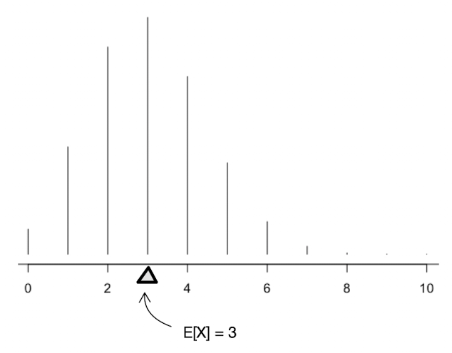
5.2.2 Variancia (rozptyl)
Variancia diskrétnej náhodnej premennej je zadefinovaná ako
\[\text{Var}[X] = E\left[(X-\text{E}[X])^2\right].\] Takže variancia nie je nič iné ako stredná hodnota kvadratických odchýlok od strednej hodnoty, teda \(\text{E}[Y]\), kde \(Y = (X-\text{E}[X])^2\).
Z definície variancie máme priamo:
\[\text{Var}[X] = \sum_{x \in \mathcal{S}_X} (x - \text{E}[X])^2 \cdot p_X(x).\] Naviac platí
\[\begin{eqnarray*} \text{Var}[X] &=& E\left[ X^2-2X\cdot \text{E}[X]+(\text{E}[X])^2 \right] \\ &=& E[X^2] - 2 \text{E}[X] \cdot \text{E}[X] + \left(\text{E}[X]\right)^2 \\ &=& E[X^2] - \left(\text{E}[X]\right)^2, \end{eqnarray*}\]kde sme využili linearitu strednej hodnoty náhodnej premennej.
Smerodajná odchýlka náhodnej premennej je odmocnina z jej variancie
\[\text{sd}[X] = \sqrt{\text{Var}[X]}.\]
Kým interpretácia strednej hodnoty bola, že ide o ťažisko, pri variancii alebo smerodajnej odchýlke je to o čosi zložitejšie.
Príklad 5.6 Variancia a smerodajná odchýlka výsledku hodu neférovej mince.
\[\begin{eqnarray*} \text{E}[X] &=& 0 \cdot 0.2 + 1 \cdot 0.8 = 0.8,\\ E[X^2] &=& 0^2 \cdot 0.2 + 1^2 \cdot 0.8 = 0.8,\\ \text{Var}[X] &=& E[X^2] - (\text{E}[X])^2 = 0.8 - 0.8^2 = 0.16, \\ \text{sd}[X] &=& \sqrt{\text{Var}[X]} = \sqrt{0.16} = 0.4. \end{eqnarray*}\]Príklad 5.7 Uvažujme náhodnú premennú \(Y\) o ktorej vieme, že
\[\begin{eqnarray*} p_Y(1) &=& 0.3,\\ p_Y(2) &=& 0.5,\\ p_Y(3) &=& 0.2.\\ \end{eqnarray*}\]Potom platí \[\begin{eqnarray*} \text{E}[Y] &=& 1 \cdot 0.3 + 2 \cdot 0.5 + 3 \cdot 0.2 = 1.9,\\ E[Y^2] &=& 1^2 \cdot 0.3 + 2^2 \cdot 0.5 + 3^2 \cdot 0.2 = 4.1,\\ \text{Var}[Y] &=& E[Y^2] - (\text{E}[Y])^2 = 4.1 - 3.61 = 0.49. \end{eqnarray*}\]
môžeme skontrolovať, že vskutku platí \[\begin{eqnarray*} \text{Var}[Y] &=& E[(Y-\text{E}[Y])^2]\\ &=& (1-1.9)^2 \cdot 0.3 + (2-1.9)^2 \cdot 0.5 + (3-1.9)^2 \cdot 0.2\\ &=& 0.243 + 0.005 + 0.242\\ &=& 0.49. \end{eqnarray*}\]
Smerodajná odchýlka je preto \(\text{sd}[Y] = \sqrt{\text{Var}[Y]} = 0.7.\)
Na tomto príklade si možno všimnúť aj to, že na jeho výpočet nepotrebujeme priamo pracovať s pravdepodobnostným priestorom.
5.3 Rovnomerné rozdelenie
Hovoríme, že diskrétna náhodná premenná \(X\) má rovnomerné rozdelenie na hodnotách \(1,2,3,\cdots,m\) ak platí2
\[\begin{equation*} p_X(k)= \begin{cases} \frac{1}{m}, & \text{ak}\ k \in \{1,2,\cdots,m \} \\ 0, & \text{inak} \end{cases} \end{equation*}\]Takúto náhodnú premennú označujeme ako \(X \sim \text{Unif}(\{1,2,\cdots,m\}),\)
Toto rozdelenie modeluje situácie, keď sú výsledky experimentu prislúchajúce \(X=1, X=2\) alebo \(X=k\) rovnako pravdepodobné. Inými slovami, keď veci nastávajú “náhodne” - v zmysle nesystematicky. Argument symetrie je niekedy použitý, a ak nie je povedané inak, tak použitím slova “náhodne” sa potichu predpokladá, že udalosti sú rovnako pravdepodobné.
Pre \(X\) s rovnomerným rozdelením musíme mať množinu \(\mathcal{S}_X\) konečnú, nakoľko potrebujeme aby platilo \(\sum_{x \in \mathcal{S}_X}p_X(x)\).
Príkladov na toto rozdelenie sme videli už viacero: hod férovou kockou alebo hod férovou mincou.
Stredná hodnota a variancia pre takúto náhodnú premennú sú \[\begin{eqnarray*} \text{E}[X] &=& \sum_{k=1}^{m}k\frac{1}{m}=\frac{1}{m} \frac{m(m+1)}{2} = \frac{m+1}{2},\\ \text{Var}[X] &=& \cdots =\frac{m^2 - 1}{12}. \end{eqnarray*}\]
5.4 Bernoulliho rozdelenie
Hovoríme, že diskrétna náhodná premenná \(X\) má Bernoulliho rozdelenie s parametrom \(p\) ak platí
\[\begin{equation*} p_X(k)= \begin{cases} p, & \text{ak}\ k=1, \\ (1-p), & \text{ak}\ k=0, \\ 0, & \text{inak.} \end{cases} \end{equation*}\]To, že náhodná premenná má takéto rozdelenie označujeme \(X \sim Bern(p).\)
Stredná hodnota a variancia pre takúto náhodnú premennú sú
\[\begin{eqnarray*} \text{E}[X] &=& p\cdot 1 + (1-p) \cdot 0 = p,\\ \text{Var}[X] &=& p(1-p). \end{eqnarray*}\]Bernoulliho rozdelenie modeluje výsledok hodu (potenciálne) neférovej mince. Ale nielen mince, čohokoľvek, čoho pravdepodobnosť je nejaké fixné číslo.
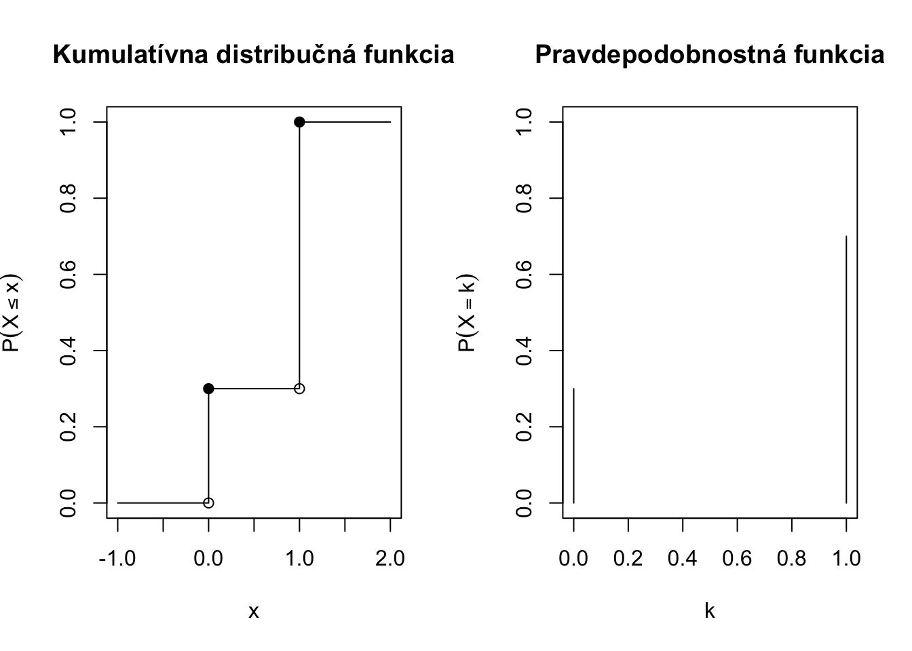
5.5 Binomické rozdelenie
Hovoríme, že diskrétna náhodná premenná \(X\) má binomické rozdelenie s parametrami \(n\) a \(p\) ak platí
\[\begin{equation*} p_X(k)= P(X=k)= \begin{cases} {n \choose k} p^k (1-p)^{n-k}, & \text{ak}\ k \in \{0,1,2,\cdots,n \} \\ 0, & \text{inak.} \end{cases} \end{equation*}\]Budeme to označovať \(X \sim \text{Bin}(n,p).\)
Stredná hodnota a variancia pre takúto náhodnú premennú sú \[\begin{eqnarray*} \text{E}[X] &=& \sum_{k=0}^{n}k{n \choose k} p^k (1-p)^{n-k}\\ &=& \sum_{k=1}^{n}k{n \choose k} p^k (1-p)^{n-k}\\ &=& \sum_{k=1}^{n}n{n-1 \choose k-1} p^k (1-p)^{n-k}\\ &=& np \sum_{k=1}^{n}{n-1 \choose k-1} p^{k-1} (1-p)^{(n-1)-(k-1)}\\ &=& np \sum_{j=0}^{m}{m \choose j} p^{j} (1-p)^{m-j}\\ &=& np, \\ \text{Var}[X] &=& \cdots = np(1-p). \end{eqnarray*}\]
Príklad 5.8 Majme náhodnú premennú \(X\), ktorá je rozdelená binomicky s parametrami \(n=5\) a \(p=0.5\). Vypočítajte \(P(X < 2).\)
\[P(X<2) = P(X=0) + P(X=1) = {5 \choose 0} 0.5^0 0.5^{5} + {5 \choose 1} 0.5^1 0.5^{4} = 0.03125 + 0.15625 = 18.75\%\]
Aké situácie sú typicky modelované binomickými rozdelením? Musíme mať
- istý fixný počet pokusov
- ktoré majú rovnaký pravdepodobnosť “uspechu” alebo “neúspechu”,
- ktoré sú nezávislé.
Je dôležité poznamenať, že ide o zjednodušenie, ktorého ambíciou je byť užitočné ale nie byť pravdou. Skoro žiadne pravdepodobnosti v reálnom svete nebudú úplne presne rovnaké a udalosti úplne nezávislé. Binomické rozdelenie je užitočná zjednodušenina, ktorá nám pomáha kvantifikovať náhodnosť spojenú s takýmito experimentami v myšlienkovom experimente, kde tieto predpoklady sú splnené presne.
Tu je nejaká skupina situácií, ktoré sú môžu modelované binomickým rozdelením:
- Aká je rozdelenie počtu pokazených súčiastok z celkového počtu 50 kusov? Chybovosť je rovnaká pre všetky súčiastky a tie sa navzájom neovplyvňujú.
- Aká je rozdelenie počtu chorých ľudí zo vzorky 100 ľudí? Pravdepodobnosť ochorenie je pre každého rovnaká a ľudia navzájom neinteragujú.
- Aká je rozdelenie počtu hláv z celkového počtu 10 nezávislých hodov mincou? Minca je stále tá istá.
- Aké je rozdelenie počtu uhádnutých otázok na teste? Pravdepodobnosť uhádnutia každej otázky je rovnaká.
- Aká je rozdelenie počtu vyliečených pacientov zo vzorky veľkosti 33? Pravdepodobnosť vyliečenia je rovnaká a nezávislá od vyliečenia iných pacientov.
- Aké je rozdelenie počtu voličov pre konkrétneho/nu kandidáta/tku v danom volebnom okrsku? Vzorka voličov je homogénna.
- Aké je rozdelenie počtu žien medzi 30 náhodne vybranými učiteľmi/kami na strednej škole?
- V danej vekovej skupine má 10% pacientov nežiadúce účinky po podaní liečby. Aké je rozdelenie počtu hlásení pri vzorke 80 pacientov?
- Aké je rozdelenie počtu SPAMových emailov z celkového počtu 100 emailov? Každý email počas dňa má rovnakú pravdepodobnosť, že bude SPAMom.
- Aké je rozdelenie počtu vrátených kusov tovaru z celkového počtu 234 kusov pre internetový obchod ak je odpozorované, že zákazníci vracajú tovar s pravdepodobnosťou 3%. Uvažujeme, že pravdepodobnosť vrátenia nesúvisí s tým o aký tovar sa jedná a vrátenie jedného kusu tovaru neovplyvní vrátenie iného.
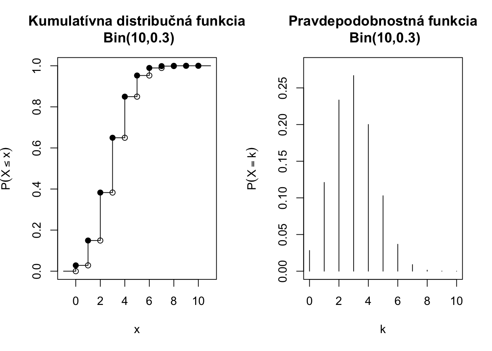
5.6 Poissonovo rozdelenie
Hovoríme, že diskrétna náhodná premenná \(X\) má Poissonovo rozdelenie s parametrom \(\lambda\) ak platí
\[\begin{equation*} p_X(k)= P(X=k)= \begin{cases} \frac{\lambda^k e^{-\lambda}}{k!}, & \text{ak}\ k \in \{0,1,2,\cdots \} \\ 0, & \text{inak.} \end{cases} \end{equation*}\]Zapisujeme to ako \(X \sim Pois(\lambda).\)
Stredná hodnota pre Poissoovsky rozdelenú náhodnú premennú je \[\begin{eqnarray*} \text{E}[X] &=& \sum_{k=0}^{\infty}k \frac{\lambda^k e^{-\lambda}}{k!}\\ &=& \lambda e^{-\lambda} \sum_{k=1}^{\infty} \frac{\lambda^{k-1} }{(k-1)!}\\ &=& \lambda e^{-\lambda} \sum_{j=0}^{\infty} \frac{\lambda^{j} }{j!}\\ &=& \lambda e^{-\lambda} e^{\lambda} = \lambda,\\ \text{Var}[X] &=& \cdots = \lambda. \end{eqnarray*}\]
Príklad 5.9 Majme náhodnú premennú \(X\), ktorá je rozdelená Poissonovsky s parametrom \(\lambda = 4\). Vypočítajte \(P(X = 1).\)
\[P(X=1) = \frac{4^1 e^{-4}}{1!} \approx 7.326\%.\]
Na to aby bola nejaká situácia, kde počítame koľko udalostí nastalo, dobre modelovaná Poissonovým rozdelením, musia platiť tieto skutočnosti:
- Hovoríme o počte nejakých udalostí, vecí v danom čase, priestore, ploche.
- Skutočnosť, že nastane jedna udalosť neovplyvní nastatie tej ďalšej.
- Udalosti nastávajú s rovnakou frekvenciou.
- Dve udalosti nemôžu nastať v ten istý čas, tom istom mieste, ploche.3
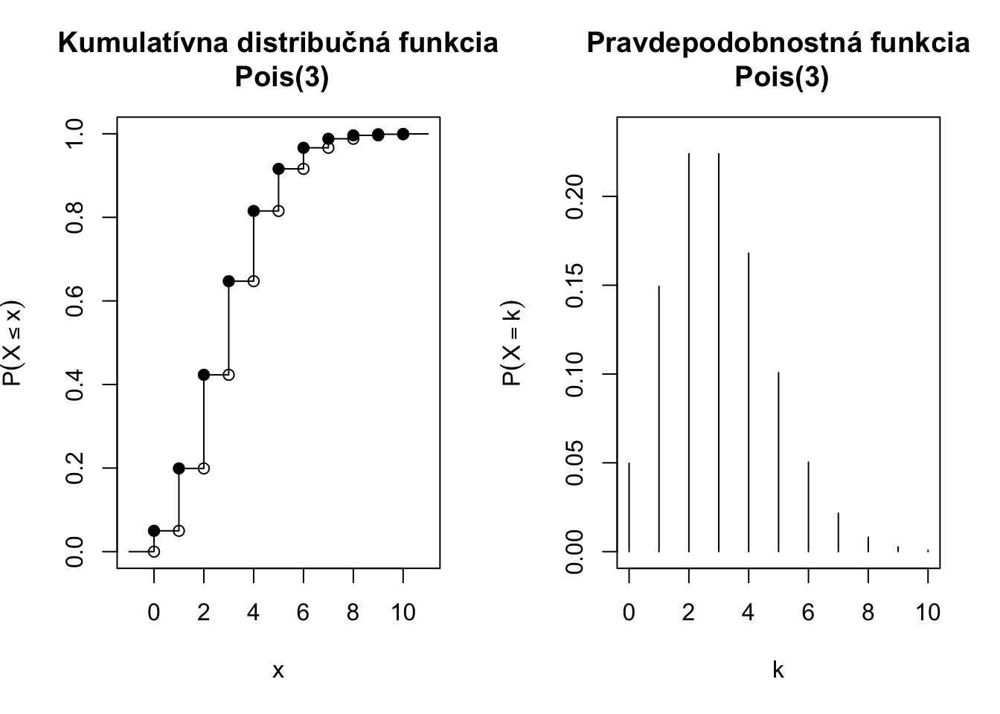
Nasledovné situácie môžu byť modelované Poissonovým rozdelením:
- Počet dopravných nehôd.
- Počet vzácnych druhov rakoviny.
- Počet návštevníkov obchodu.
- Počet zemetrasení.
- Počet rastlinných druhov na nejakom úseku zeme.
- Počet vyžiarených častíc z rádioaktívneho zdroja.
- Počet zranení spôsobených kopnutím koňa počas roka.
- Počet narodených detí v daný deň.
- Počet medveďov, ktoré stretneme v daný rok.
Nasledujúci obrázok porovnáva Poissonovsky rozdelené náhodné premenné pre rôzne parametre.
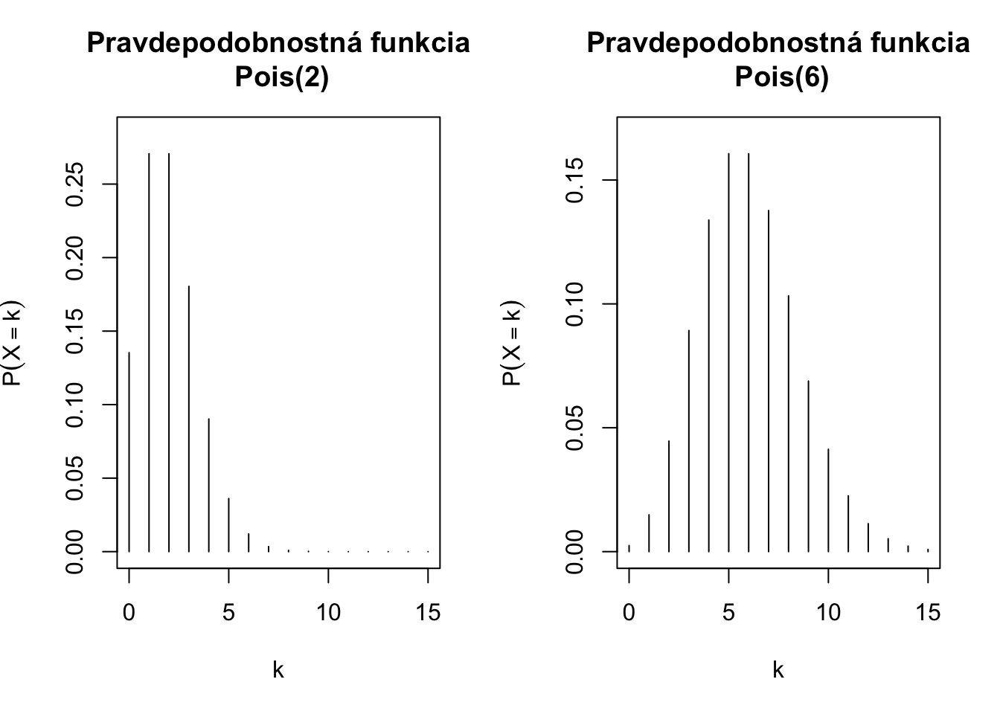
Poissonovské rozdelenie \(Pois(\lambda)\) veľmi dobre aproximuje binomické \(\text{Bin}(n,p)\) kde priemerná hodnota \(\lambda = np\) a \(n \rightarrow \infty\) a súčasne \(p \rightarrow 0.\) Nasledujúci obrázok porovnáva rozdelenia \(\text{Bin}(1000,0.003)\) a \(Pois(3).\) Sú na nerozoznanie.
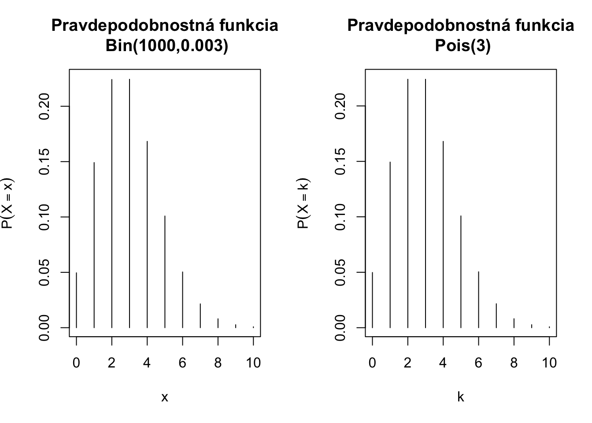
Toto nám zároveň aj pomáha odpovedať na otázku, kedy je Poissonovské rozdelenie adekvátne. Napríklad vtedy, keď je binomický model adekvátny ale počet pokusov je veľký a pravdepodobnosť malá. Aká je pravdepodobnosť, že najbližsiu sekundu príde niekto na môj webovský server? Malá (\(p\) je malé číslo). Ale na druhej strane tých sekúnd je veľa (\(n\) je veľké čislo).4
5.7 Geometrické rozdelenie
Hovoríme, že diskrétna náhodná premenná \(X\) má geometrické rozdelenie s parametrom \(p\) ak platí
\[\begin{equation*} p_X(k)= \begin{cases} (1-p)^k p, & \text{ak}\ k \in \{0,1,2,\cdots \} \\ 0, & \text{inak.} \end{cases} \end{equation*}\]V tomto prípade používame nasledovné značenie \(X \sim \text{Geom}(p).\)
Príklad 5.10 Majme náhodnú premennú \(X\), ktorá je rozdelená geometricky s parametrom \(p = 0.1\). Vypočítajte \(P(X = 10).\) (Teda, že “úspech” nastane v 11. pokuse)
\[P(X=10) = (1-p)^{10}p = 0.9^10 0.1 \approx 3.48\%.\]
Príklad 5.11 Majme náhodnú premennú \(X\), ktorá je rozdelená geometricky s parametrom \(p=0.3\). Vypočítajte \(P(X < 4).\)
\[\begin{eqnarray*} P(X < 4) &=& P(X=0) + P(X=1) + P(X=2) + P(X=3)\\ &=& 0.7^0 0.3 + 0.7^1 0.3 + 0.7^2 0.3 +0.7^3 0.3\\ &=& 0.3 + 0.21 + 0.147 + 0.1029 \approx 75.99\%. \end{eqnarray*}\]Geometrické rozdelenie je vhodné na modelovanie situácií, kedy čakáme na prvý úspech, ktorý prichádza v každom kroku s pravdepodobnosťou \(p\). Náhodná premenná hovorí o počte neúspechov, kým nenastane prvý úspech.
Stredná hodnota a variancia pre geometricky rozdelenú náhodnú premennú s parametrom \(p\) sú \[\begin{eqnarray*} \text{E}[X] &=& \sum_{k=0}^{\infty} k (1-p)^k p\\ &=& p \sum_{k=0}^{\infty} k (1-p)^k\\ &=& \frac{1-p}{p},\\ \text{Var}[X] &=& \cdots = \frac{1-p}{p^2}. \end{eqnarray*}\]
Čo musí byť splnené aby počet neúspechov, kým nastane prvý úspech bol adekvátne popísaný geometrickým rozdelením?
- jednotlivé pokusy musia byť nezávislé,
- jednotlivé pokusy musia mať rovnakú a fixnú pravdepodobnosť úspechu.
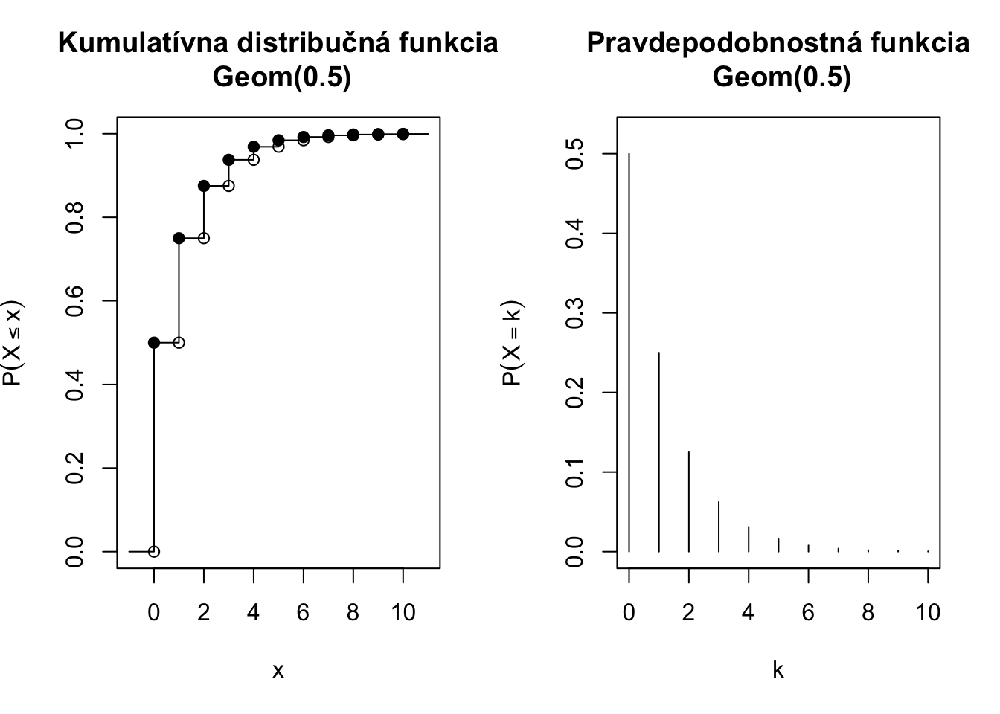
Nasledovné situácie môžu byť modelované (ich adekvátnosť záleží od konkrétneho príkladu) geometrickým rozdelením:
- Počet ľudí, ktorých sa musím opýtať otázku, kým nenarazím na niekoho, kto bude vedieť odpovedať.
- Počet striel na bránu kým nepadne gól.
- Počet zákazníkov, kým nepríde nejaký, ktorý sa bude sťažovať.
- Počet vyrobených súčiastok, kým nenastane chyba.
- Počet opravených testov, kým niektorý študent dostane A.
- Počet rizikových startupov do ktorých treba investovať, kým nejaký z nich bude úspešný.
- Počet talentov, ktoré musí hľadač talentov vyskúšať, kým nenájde superhviezdu.
Tento obrázok porovnáva geometricky rozdelené náhodné premenné pre rôzne parametre.
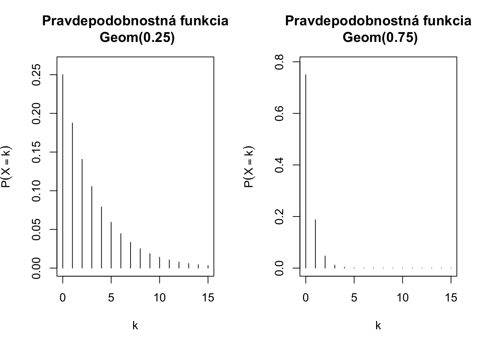
5.8 Hypergeometrické rozdelenie
Hovoríme, že diskrétna náhodná premenná \(X\) má hypergeometrické rozdelenie s parametrami \(N,K\) a \(n\) ak platí
\[\begin{equation*} p_X(k)= \begin{cases} \frac{{K \choose k} {N-K \choose n-k}}{{N \choose n}}, & \text{ak}\ k \in \left\{\max\{0,n+K-N\},\cdots,\min\{n,K\} \right\} \\ 0, & \text{inak.} \end{cases} \end{equation*}\]Označovať ju budeme ako \(X \sim \text{HyperGeom}(N,K,n)\)
Stredná hodnota pre hypergeometricky rozdelenú náhodnú premennú (dôvodenie vynechávame) je
\[\begin{eqnarray*} \text{E}[X] &=& \sum_{k = \max\{0,n+K-N\}}^{\min\{n,K\}} k \frac{{K \choose k} {N-K \choose n-k}}{{N \choose n}} = \cdots = n \frac{K}{N}.\\ \text{Var}[X] &=& \cdots = n \frac{K}{N}\frac{N-K}{N} \frac{N-n}{N-1}. \end{eqnarray*}\]Vo veľkom vreci máme \(N\) guľôčok, z toho \(K\) červených. Načrieme rukou a vyberieme hrsť o veľkosti \(n\) guličiek. Aká je šanca, že spomedzi týchto \(n\) guličiek je práve \(k\) červených?
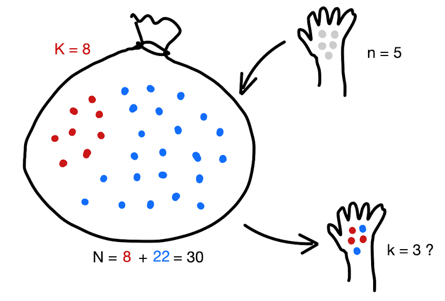
Dôvodenie pre tvar \(p_X(k)\) je nasledovné. Existuje práve \({N \choose n}\) rôznych spôsobov ako vybrať hrsť veľkosti \(n\) z celkovej množiny \(N\) guličiek, takže to je celkový počet hrstí. Koľko je “úspešných” hrstí? No existuje \({K \choose k}\) možností ako vybrať červené guličky a zároveň (preto je to súčin) \({N-K \choose n-k}\) možností ako vybrať modré guličky.
Príklad 5.12 Majme náhodnú premennú \(X\), ktorá je rozdelená hypergeometricky s parametrami \(N=30, K=8, n = 5\). Vypočítajte \(P(X = 3).\)
\[\begin{eqnarray*} P(X = 3) &=& \frac{{K \choose k} {N-K \choose n-k}}{{N \choose n}}\\ &=& \frac{{8 \choose 3} {22 \choose 2}}{{30 \choose 5}} \approx 9.08\%. \end{eqnarray*}\]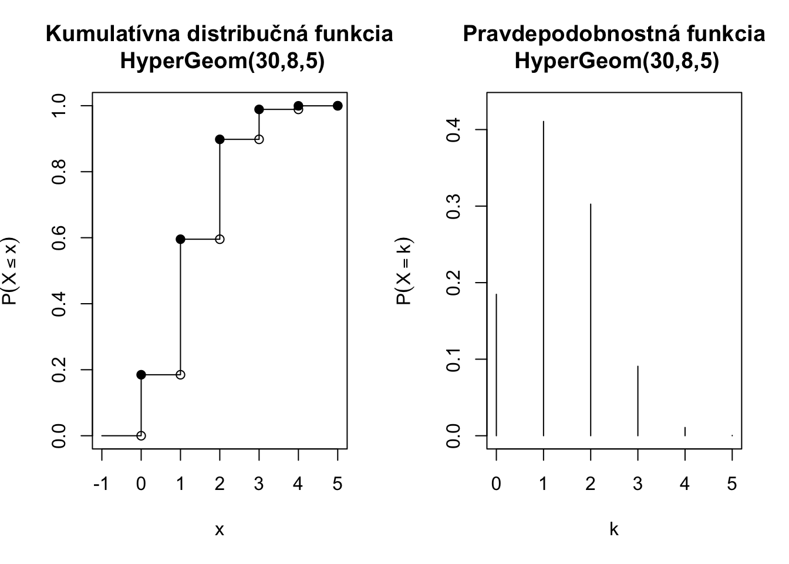
Hypergeometrické rozdelenie môže vhodne modelovať napríklad nasledovné situácie:
- Koľko je žien medzi náhodne vybranými 10 ľudmi ako je v danom okrsku 100 mužov a 200 žien?
- Vieme, že medzi 200 súčiastkami je 10 chybných. Koľko chybných bude z náhodnej vybranej vzorky 20 súčiastok?
- Z 25 uchádzačov (10 so skúsenosťami, 15 bez skúseností) o prácu vyberú 4. Aká je šanca, že medzi náhodne vybranými 4 kandidátmi budú práve dvaja so skúsenosťami?
Nižšie sú pravdepodobnostné funkcie pre rôzne hodnoty \(N\).
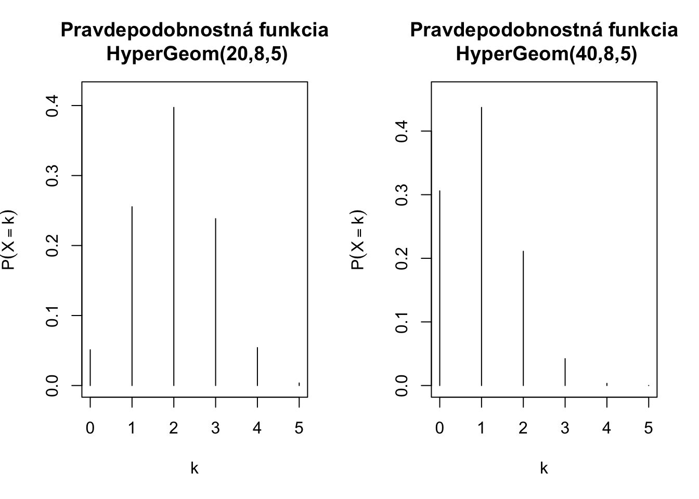
5.9 Negatívne binomické rozdelenie
Hovoríme, že diskrétna náhodná premenná \(X\) má negatívne binomické rozdelenie s parametrami \(r\) a \(p\) ak platí
\[\begin{equation*} p_X(k)= \begin{cases} {k + r - 1 \choose r-1} (1-p)^k p^r, & \text{ak}\ k \in \left\{0,1,2,3,\cdots \right\} \\ 0, & \text{inak.} \end{cases} \end{equation*}\]Označovať ju budeme ako \(X \sim \text{NegBin}(r,p)\)
Stredná hodnota a variancia pre negatívne binomicky rozdelenú náhodnú premennú (dôvodenie vynechávame) sú
\[\begin{eqnarray*} \text{E}[X] &=& \sum_{k = 0}^{\infty} k{k + r - 1 \choose r-1} (1-p)^k p^r = \cdots = \frac{(1-p)r}{p},\\ \text{Var}[X] &=& \cdots = \frac{(1-p)r}{p^2}. \end{eqnarray*}\]Takáto náhodná premenná popisuje počet neúspechov, kým nenastane \(r\)-tý úspech.
Príklad 5.13 Majme náhodnú premennú \(X\), ktorá je rozdelená negatívne binomicky s parametrami \(r=4\) a \(p=0.6\). Vypočítajte \(P(X = 3).\) (Toto zodpovedá 3 neúspechom, kým nenastanú 4 úspechy, takže 4. úspech nastane pri 7. pokuse.)
\[\begin{eqnarray*} P(X = 3) &=& {k + r - 1 \choose r-1} (1-p)^k p^r\\ &=& {3 + 4 - 1 \choose 4-1} (1-0.6)^3 0.6^4 \approx 16.59\%. \end{eqnarray*}\]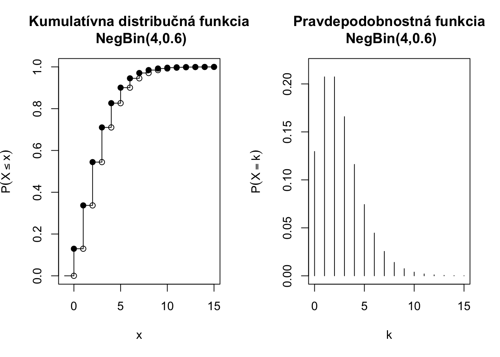
Tieto situácie môžu byť popísané negatívne binomickým rozdelením:
- Stroj zvládne 10 zlyhaní. Ako dlho bude bežať ak je pravdepodobnosť zlyhania na jednu časovú jednotku \(p\)?
- Ropná spoločnosť má prostriedky na 5 výskumných vrtov. Úspešnosť každého vrtu je \(15\%\). Aká je šanca, že prvýkrát narazí na ropu pri štvrtom vrte?
Nižšie sú pravdepodobnostné funkcie pre rôzne parametre \(p\):
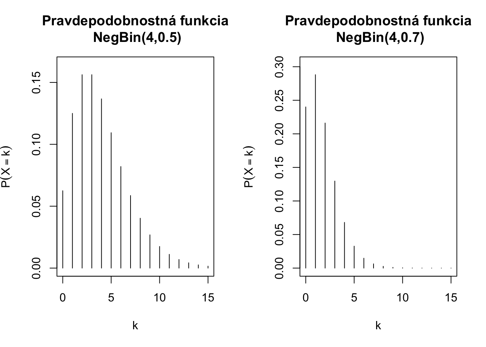
5.10 Zhrnutie
Existujú rôzne diskrétne náhodné premenné. Niektoré skupiny náhodých premenných sú natoľko zaujímavé, že majú aj svoje špeciálne mená.
5.11 Cvičenia
Cvičenie 5.1 Ukážte, že nemôže existovať taká konštanta \(c \in \mathbb{R},\) že by nasledovná funkcia popisovala pravdepodobnostnú funkciu náhodnej premennej \(X\): \[\begin{equation*} p_X(k)= \begin{cases} \frac{c}{k}, & \text{ak}\ k \in \{1,2,\cdots \} \\ 0, & \text{inak.} \end{cases} \end{equation*}\]
Cvičenie 5.2 Vypočítajte varianciu diskrétnej rovnomerne rozdelenej náhodnej premennej.
Cvičenie 5.3 Majme náhodnú premennú \(X\), ktorá je rozdelená binomicky s parametrami \(n=10\) a \(p=0.25\). Vypočítajte \(P(X < 4).\)
Cvičenie 5.4 Majme náhodnú premennú \(X\), ktorá je rozdelená binomicky s parametrami \(n=8\) a \(p=0.8\). Vypočítajte \(P(X > 6).\)
Cvičenie 5.5 Raketový modul má 6 tesnení. Každé z nich môže zlyhať s pravdepodobnosťou \(0.01\). Aká je pravdepodobnosť, že zlyhá nie viacej ako jedno tesnenie ?
Cvičenie 5.6 Na prejdenie desaťotázkového testu s možnosťami A, B, C, D, kde práve jedna odpoveď je správna, treba správne odpovedať na aspoň 5 otázok. Aká je šanca, že to študent zvládne bez učenia?
Cvičenie 5.7 Na prejdenie desaťotázkového testu s možnosťami A, B, C, D, kde práve jedna odpoveď je správna, treba správne odpovedať na aspoň 5 otázok. Na prvých 5 otázok vie študent odpovedať správne s pravdepodobnosťou 80%, druhých päť sa týka látky, ktorú nikdy nevidel. Aká je šanca, že tento študent zvládne tento test?
Cvičenie 5.8 Majme náhodnú premennú \(X\), ktorá je rozdelená Poissonovsky s parametrom \(\lambda = 8\). Vypočítajte \(P(X = 2).\)
Cvičenie 5.9 Počet rastlinných druhov na exotickom ostrove je modelovaný \(Pois(10)\) na každých \(1m^2\). Aká je pravdepodobnosť, že na náhodne zvolenom metri štvorcovom nájdeme viacej ako 12 ale menej ako 15 rôznych rastlinných druhov?
Cvičenie 5.10 Majme náhodnú premennú \(X\), ktorá je rozdelená geometricky s parametrom \(p=0.8\). Vypočítajte \(P(X \geq 5).\)
Cvičenie 5.11 Majme náhodnú premennú \(X\), ktorá je rozdelená geometricky s parametrom \(p=0.2\). Vypočítajte \(P(X <3).\)
Cvičenie 5.12 Majme náhodnú premennú \(X\), ktorá je rozdelená hypergeometricky s parametrami \(N=10, K=6,n=5\). Vypočítajte \(P(X = 3).\)
Cvičenie 5.13 Majme náhodnú premennú \(X\), ktorá je rozdelená hypergeometricky s parametrami \(N=12, K=5,n=5\). Vypočítajte \(P(X = 3).\)
Zdôvodnite, prečo sa \(\text{Bin}(n,p)\) rozdelená náhodná premenná správa podobne ako \(Pois(\lambda),\) pre \(n \rightarrow \infty\) a \(p \rightarrow 0\) a súčasne \(\lambda = np.\)
Cvičenie 5.14 Ak je šanca katastrofy každých sto rokov rovná \(1/6\), aká je pravdepodobnosť, že nejaká katastrofa nastane počas nasledujúcich 500 rokov?
Cvičenie 5.15 Vypočítajte hodnotu
\[\sum_{j=2}^{n} j(j-1) {n \choose j} p^j (1-p)^{n-j}.\]
Cvičenie 5.16 Aké je pravdepodobnostné rozdelenie počtu uhádnutých otázok na ABCD teste z celkového počtu 10 otázok, ak vieme, že z prvých dvoch otázok otázok bola správne zodpovedaná práve jedna otázka?
Cvičenie 5.17 V klinickom skúšaní máme dve skupiny po 10 pacientov. V prvej skupine je pravdepodobnosť úspešnosti liečby \(0.5\), v druhej skupine je to \(0.7\). Uvažujme, že výsledky všetkých pacientov sú od seba nezávislé. Aká je pravdepodobnosť, že v prvej skupine bude aspoň toľko úspešne vyliečených ako a v druhej skupine?
Cvičenie 5.18 Presné testy sú drahé. Uvažujme nasledujúcu situáciu. Máme 1000 ľudí, ktorých potrebujeme otestovať. Pravdepodobnosť pozititívneho testu nech je 0.01. Namiesto toho, aby sme otestovali každého človeka osobitne. Tak spojíme odberové vzorky do 10 skupín po 100. Ak bude v nejakej skupine detekovaná pozitivita, tak pretestujeme všetkých 100 ľudí v tejto skupine.
- Koľko testov v priemere urobíme?
- Aká je pravdepodobnosť, že týmto spôsobom urobíme viacej testov ako 1000?
Cvičenie 5.19 Nech je pravdepodobnosť narodenia trojičiek \(1/10000\). Aká je pravdepodobnosť, že z 8000 pôrodov sa narodia trojičky práve jedenkrát?
Cvičenie 5.20 Letecká prepravná spoločnosť predáva 200 lístkov napriek tomu, že v lietadle je len 198 miest nakoľko v priemere \(3\%\) ľudí neprídu. Toto je bežnou praxou a nazýva sa to overbooking. Aká je pravdepodobnosť, že si všetci pasažieri budú mať kde v lietadle sadnúť?
Cvičenie 5.21 Nech je v populácii 0.1% ľudí farboslepých. Aká je šanca, že v náhodnej vzorke 800 ľudí nebude viacej ako jeden človek farboslepý?
Cvičenie 5.22 V balíku je 37 gumených žížal. Z nich 13 sú kyslé gumené žížaly a 24 sú nekyslé gumené žížaly. Aká je šanca, že náhodne vybratá hrsť veľkosti 8 žížal bude mať práve 3 kyslé gumené žížaly.
Cvičenie 5.23 Uvažujme boxera, ktorý potrebuje 4 víťazné údery na to, aby knockoutoval súpera. Sám však znesie úderov 6, siedmy už nie. Je o čosi lepší ako jeho súper a šanca, že daná výmena skončí v jeho prospech je \(0.53\). Aká je šanca, že zápas skončí v jeho prospech?
Cvičenie 5.24 Chyba pri každom produkčnom cykle stroja je \(0.015\), denne zvládne stroj 8 cyklov. Stroj sa po 3 chybách zasekne a treba ho servisovať. Aká je šanca, že stroj bude fungovať bez zastavenia celé dva pracovné týždne?
Cvičenie 5.25 Výskumníčka musí získať 20 dotazníkových odpovedí. Každý človek odpovie na žiadosť odoslať dotazník s pravdepodobnosťou \(40\%\). Aká je pravdepodobnosť, že musí výskumníčka osloviť viacej ako 50 ľudí?
Cvičenie 5.26 Ukážte, že limita pravdepodobnostnej funkcie hypergeometricky rozdelenej náhodnej premennej sa blíži k pravdepodobnostnej funkcii binomicky rozdelenej náhodnej premennej pre \(M/N \rightarrow p.\)
Cvičenie 5.27 Odvoďte varianciu pre náhodnú premennú \(X \sim \text{Bin}(n,p).\)
Cvičenie 5.28
Doplňte veľkosť chýbajúcej hodnoty \(p_X(5).\)
Doplňte veľkosť chýbajúcej hodnoty \(p_X(5)\) a \(p_X(6)\) tak, aby \(\text{E}[X]=3.6.\)
Doplňte veľkosť chýbajúcej hodnoty \(p_X(4), p_X(5)\) a \(p_X(6)\) tak, aby \(\text{E}[X]=3.2\) a \(\text{Var}[X]=1.56.\)
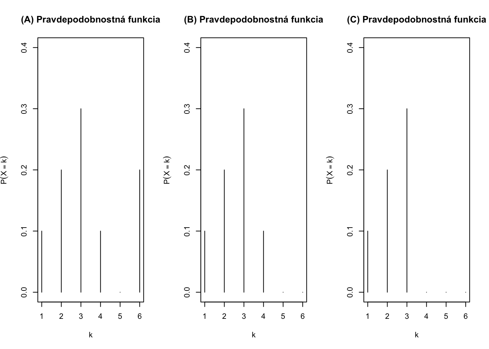
Cvičenie 5.29 Máme náhodnú premennú, ktorej realizácie sú 7,8,8,9,8,7,8,8,7,6,7,8,8,8,7,6,7,6,7,7,8,9,8,7,9,6,9,9,6,6,9,…
Čo by ste povedali, aká je približne stredná hodnota?
- 6
- 6.5
- 7
- 7.5
- 8
- 8.5
- 9
Čo by ste povedali, aká je približne variancia tejto náhodnej premennej?
- -1
- 0
- 1
- 4
- 8
- 16
Cvičenie 5.30 Doplňte
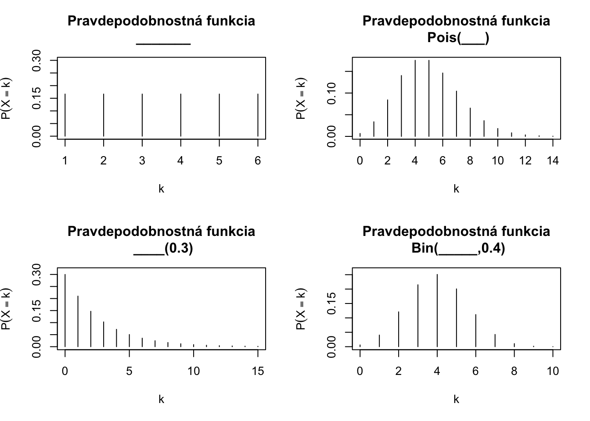
Cvičenie 5.31 Prepojte
Rovnomerné rozdelenie.
Bernoulliho rozdelenie.
Binomické rozdelenie.
Poissonovo rozdelenie.
Geometrické rozdelenie.
Hypergeometrické rozdelenie.
Negatívne binomické rozdelenie.
s nasledujúcimi situáciami/úlohami
Počet správne uhádnutých odpovedí na externej maturitnej skúške.
Šanca, že zo siedmych gumených medvedíkov, ktoré si vybereme z balíčka je práve 5 červenej farby. V balíčku je 80 macíkov (rodinné balenie) a z nich 33 je červených.
Šanca, že sa nám podarí urobiť skúšku bez učenia, keď máme právo na dva opravné termíny.
Počet rastlinných druhov na náhodne vybranom kúsku pôdy.
Šanca, že náhodne vybraná fixka je modrá.
Výhra v stávkovej spoločnosti, kde kurz implikuje pravdepodobnosť výhry 36%.
Rok, kedy konečne prvýkrát stihnem urobiť daňové priznanie bez odkladu.
Túto podmienku potrebujeme na to, aby bola táto suma konvergentná. V prípade, že \(\mathcal{S}_X\) je konečná množina je táto podmienka splnená vždy. Pri nekonečnej spočitaťelnej množine \(\mathcal{S}_X\) však čiastočné súčty radu môžu divergovať.↩︎
Všimnime si, že teraz budeme používať \(k\) namiesto \(x\), teda \(p_X(k)\) namiesto \(p_X(x)\). Zvykom je, že písmená ako \(k,l,m,n\) sa používajú na označenie prirodzených čísel, zatiaľčo \(x,y,z\) sú používané skôr na označenie reálnych čísel.↩︎
Náhodný proces, ktorý modeluje takéto udalosti sa nazýva Poissonov proces a je dôležitým matematickým nástrojom v poisťovníctve. Budeme sa o ňom dopodrobna učiť neskôr.↩︎
Binomické rozdelenie pri veľkom počte pokusov má aj tú nevýhodu, že sa ťažšie vyčísluje numericky. Pre \(X \sim \text{Bin}(1000,0.001)\) vypočítať napríklad \(p_X(20)= {1000 \choose 20} 0.001^{20} 0.999^{980}\) nie je jednoduché, lebo spolu násobíme obrovské aj maličké čísla.↩︎